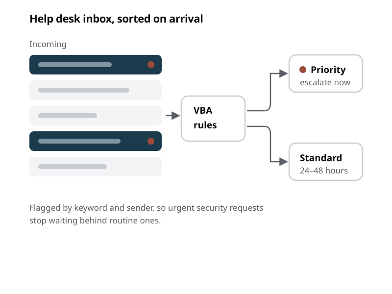

A summer spent reading help desk email surfaced a simple problem: urgent security requests waited in the same queue as password resets. This sorts them before a person ever looks.

Part of my internship was triaging incoming and outgoing email across several department mailboxes, watching for phishing attempts, malware, and anything else that could put sensitive judicial data at risk. Doing that by hand for a few weeks makes the shape of the traffic very obvious.
Most of it was routine. A small fraction was genuinely time-sensitive. And because everything landed in one undifferentiated queue, the time-sensitive fraction was found whenever someone happened to reach it — which is a poor way to handle a security request and an avoidable one.
This did not need machine learning. The signals that separate urgent from routine were things a rule could check: specific keywords in the subject and body, and specific senders whose messages should never sit unread.
I built it with VBA and Power Automate — chosen because they were already approved and running in the department. A more elegant solution on an unapproved platform would not have shipped, and in a government IT environment that tradeoff is not close.
The workflow guaranteed that every inquiry and response was reviewed within a 24–48 hour window, which the department had not been able to promise before. High-priority tickets escalate faster because they're identified at arrival rather than at discovery, and staff stopped spending part of each morning sorting by hand.
The failure mode I cared most about was the rules being too aggressive. A priority folder that fills with routine mail is the same as no priority folder — people stop trusting it within a week. Keeping the trigger list narrow and specific mattered more than catching every possible case.
Described at a high level: no keyword lists, sender rules, or department data are included, since publishing the triggers would undermine what they're for.